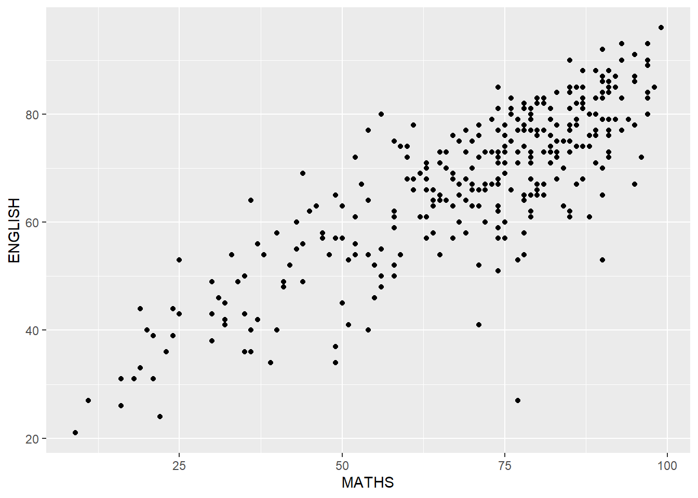
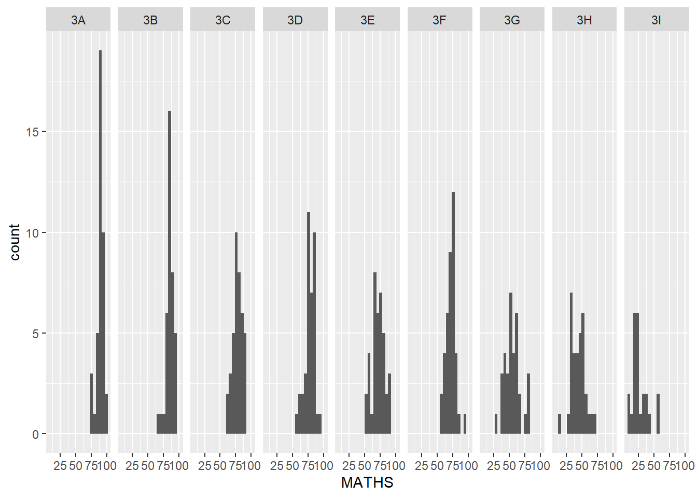

pacman::p_load(tidyverse)Hands on Exercise 01: ggplot2 Graphics
Introduction
In this document, we will explore ggplot2 for creating elegant and functional statistical graphics
Loading Data
Load tidyverse
Read data file
exam_data = read_csv("data/Exam_data.csv")First Glance: Comparing Graphics
hist(exam_data$MATHS)
Here the code is simple
ggplot(data=exam_data, aes(x = MATHS)) +
geom_histogram(bins=10,
boundary = 100,
color="black",
fill="grey") +
ggtitle("Distribution of Maths scores")Here, there are more paramters to customise, but the mapping between variables and the properties of interest are more visible here
Grammar of Graphics
Before we dive in, We need to understand that there is a scheme for data visualization which breaks up graphs into components such as scales and layers.
These consist of:
Data: The dataset being plotted.
Aesthetics, which take attributes of the data and use them to influence visual characteristics, such as position, colours, size, shape, or transparency.
Geometrics: The visual elements used for our data, such as point, bar or line.
Facets, which split the data into subsets to create multiple variations of the same graph (paneling, multiple plots).
Statistics, which are statistical transformations that summarise data (e.g. mean, confidence intervals).
Coordinate systems, which define the plane on which data are mapped on the graphic.
Themes, which modify all non-data components of a plot, such as main title, sub-title, y-aixs title, or legend background.
Essential Grammatical Element 1: Data
We call ggplot2 using
ggplot(data=exam_data)
This initialises a ggplot object and displays a blank canvas
Essential Grammatical Element 2: Aesthetics
Aesthetic mappings take attributes of the data and and use them to influence visual characteristics, such as position, colour, size, shape, or transparency. Each visual characteristic can thus encode an aspect of the data and be used to convey information.
All aesthetics of a plot are specified in the aes() function call, as below
ggplot(data=exam_data,
aes(x= MATHS))
This draws the x-axis together with the label.
Essential Grammatical Element 2: Geometrics
Geometric objects are the actual marks we put on a plot. Examples include:
- geom_bar for drawing bar charts
- geom_dotplot for counting occurrences of a variable
- geom_histogram for drawing a histogram
- geom_density for drawing kernel density estimates
- geom_boxplot for drawing vertical boxplots
- geom_violin for drawing violin plots
- geom_point for drawing a scatter plot
- geom_line for drawing line charts
- geom_smooth for drawing simple trends with smoothed lines
- geom_polygon for drawing arbitrary shapes
- geom_map for drawing polygons in the shape of a map (The data to be used in these maps are passed using the map_data() function)
Geometric Objects: geom_bar()
Plot bar charts
ggplot(data=exam_data,
aes(x=RACE)) +
geom_bar()
ggplot(data=exam_data,
aes(x=GENDER)) +
geom_bar()Geometric Objects: geom_dotplot()
In a dot plot, dots are stacked, with each dot representing one observation. By default, ggplot2 sets the bin width to 1/30th of the range of the data. This default value may not always produce an optimal histogram, so it would be better to specify the binning
The code below plots a dot plot
ggplot(data=exam_data,
aes(x = ENGLISH)) +
geom_dotplot(binwidth = 5,
dotsize = 0.3)Observe the scale of the y-axis is very misleading, and in fact has gone out of range for 5 of our bins, so we use the scale_y_continuous() method to turn off the y-axis including it’s break marks, and adjust the dotsize for visibility
ggplot(data=exam_data,
aes(x = ENGLISH)) +
geom_dotplot(binwidth = 2.5,
dotsize = 0.5) +
scale_y_continuous(NULL, breaks = NULL)
Geometric Objects: geom_histogram()
A simple histogram is created using the ENGLISH field from exam_data
ggplot(data=exam_data,
aes(x = ENGLISH)) +
geom_histogram()Geometric Objects Modification Using arguments
In the code chunk below,
- bins argument is used to change the number of bins to 20. Note that binwidth argument overrides this
- fill argument is used to shade the histogram with light blue color, and
- color argument is used to change the outline colour of the bars in black
ggplot(data=exam_data,
aes(x= ENGLISH)) +
geom_histogram(bins=20,
color="black",
fill="light blue") Geometric Objects Modification using aes()
- The code chunk below fills the histogram with colour by using a sub-group of aesthetic()
ggplot(data=exam_data,
aes(x= ENGLISH,
fill = GENDER)) +
geom_histogram(bins=20,
color="grey30")Geometric Objects: geom_density() This computes and plots a kernel density estimate, which is a smoothed version of the histogram. It is a useful alternative to the histogram for continuous data that comes from an underlying smooth distribution.
ggplot(data=exam_data,
aes(x = ENGLISH)) +
geom_density() The code chunk below plots two kernel density lines by using colour argument of aes()
ggplot(data=exam_data,
aes(x = ENGLISH,
colour = GENDER)) +
geom_density()Geometric Objects: geom_boxplot()
This displays a vertiacal continuous value diagram. It visualises five summary statistics (the median, two quartiles, and two extreme values), and all “outlying” points individually.
ggplot(data=exam_data,
aes(y = ENGLISH,
x= GENDER)) +
geom_boxplot()
Instead of rectangular boxes, we can use notches to help visually assess whether the medians of distributions differ. This is useful when the medians are close together, to determine whether the medians are equal.
A notched plot is identical to a box_plot, except the existence of a notch argument
ggplot(data=exam_data,
aes(y = ENGLISH,
x= GENDER)) +
geom_boxplot(notch=TRUE)
Geometric Objects: geom_violin()
This creates a violin plot, which is a way of comparing multiple data distributions. With ordinary density curves, it is difficult to compare more than just a few distributions because the lines visually interfere with each other. With a violin plot, it’s easier to compare several distributions since they’re placed side by side.
We plot the distribution of English scores by gender in a violin plot.
ggplot(data=exam_data,
aes(y = ENGLISH,
x= GENDER)) +
geom_violin()Geometric Objects: geom_point()
This creates a scatterplot.
We plot the scatter showing the Maths and English grades of students.
ggplot(data=exam_data,
aes(x= MATHS,
y= ENGLISH)) +
geom_point()
geom objects can be combined
We plot the scatter on the boxplot using the code chunk below
ggplot(data=exam_data,
aes(y = MATHS,
x= GENDER)) +
geom_boxplot() +
geom_point(position="jitter",
size = 0.5)The order of the plots matter. In this case, the scatter plot has been overlaid on the boxplot as the boxplot code comes first.
Essential Grammatical Elements in ggplot2: stat
The Statistics functions statistically transform data, usually as some form of summary. For example:
- frequency of values of a variable (bar graph)
- a mean
- a confidence limit
- There are two ways to use these functions:
- add a stat_() function and override the default geom, or
- add a geom_() function and override the default stat.
Working with stat_()
The boxplots below are incomplete because the positions of the means are not displayed.
ggplot(data=exam_data,
aes(y = ENGLISH, x= GENDER)) +
geom_boxplot()The code chunk below adds mean values by using stat_summary() function and overriding the default geom.
ggplot(data=exam_data,
aes(y = ENGLISH, x= GENDER)) +
geom_boxplot() +
stat_summary(geom = "point",
fun = "mean",
colour ="red",
size=4)Working with stat - the geom_() method
The code chunk below adds mean values by using the geom_() function and overriding the default stat.
ggplot(data=exam_data,
aes(y = MATHS, x= GENDER)) +
geom_boxplot() +
geom_point(stat="summary",
fun="mean",
colour="red",
size=4) 
Adding a best fit curve on a scatterplot
We return to the scatterplot previously showing the relationship of Maths and English grades of students

The interpretability of this graph can be improved by adding a best fit curve.
We use geom_smooth() to fit a best fit curve on the scatterplot.
ggplot(data=exam_data,
aes(x= MATHS, y=ENGLISH)) +
geom_point() +
geom_smooth(linewidth=1)The default smoothing method uses Locally Estimated Scatterplot Smoothing (LOESS), but can be overridden to a linear best fit curve as below
ggplot(data=exam_data,
aes(x= MATHS,
y=ENGLISH)) +
geom_point() +
geom_smooth(method=lm,
linewidth=1)
Essential Grammatical Elements in ggplot2: facets
Facetting generates small multiples (sometimes also called trellis plot), each displaying a different subset of the data. They are an alternative to aesthetics for displaying additional discrete variables. ggplot2 supports two types of factes, namely: facet_grid() and facet_wrap().
Working with facet_wrap()
facet_wrap() wraps a 1d sequence of panels into 2d. This is generally a better use of screen space than facet_grid because most displays are roughly rectangular.
The code chunk below plots a trellis plot using facet_wrap() which divides the plot into multiple panels based on the values of the variable <span style= background-color: #D3D3D3;“>CLASS.
ggplot(data=exam_data,
aes(x= MATHS)) +
geom_histogram(bins=20) +
facet_wrap(~ CLASS)
Working with facet_grid()
facet_grid() forms a matrix of panels defined by row and column facetting variables. It is most useful when you have two discrete variables, and all combinations of the variables exist in the data.
The code chunk below plots a trellis plot using facet_grid().
ggplot(data=exam_data,
aes(x= MATHS)) +
geom_histogram(bins=20) +
facet_grid(~ CLASS)
Essential Grammatical Elements in ggplot2: Coordinates
The Coordinates functions map the position of objects onto the plane of the plot. There are a number of different possible coordinate systems to use, they are:
coord_cartesian(): the default cartesian coordinate systems, where you specify x and y values (e.g. allows you to zoom in or out).coord_flip(): a cartesian system with the x and y flipped.coord_fixed(): a cartesian system with a “fixed” aspect ratio (e.g. 1.78 for a “widescreen” plot).coord_quickmap(): a coordinate system that approximates a good aspect ratio for maps.
Working with Coordinates
By default, the bar chart of ggplot2 is in vertical form.
ggplot(data=exam_data,
aes(x=RACE)) +
geom_bar()
The code chunk below flips the horizontal bar chart into vertical bar chart by using coord_flip().
ggplot(data=exam_data,
aes(x=RACE)) +
geom_bar() +
coord_flip()
Changing the y and x-axis range
The previous scatterplot with best fit line is slightly misleading because the y-axis and x-axis ranges are not equal.
ggplot(data=exam_data,
aes(x= MATHS,
y=ENGLISH)) +
geom_point() +
geom_smooth(method=lm,
linewidth=1)The code chunk below fixes both the y-axis and x-axis range from 0-100.
ggplot(data=exam_data,
aes(x= MATHS, y=ENGLISH)) +
geom_point() +
geom_smooth(method=lm,
size=0.5) +
coord_cartesian(xlim=c(0,100),
ylim=c(0,100))
Essential Grammatical Elements in ggplot2: Themes
Themes control elements of the graph not related to the data. For example:
- background colour
- size of fonts
- gridlines
- colour of labels
Built-in themes include: - theme_gray() (default) - theme_bw() - theme_classic()
A list of themes can be found at this link. Each theme element can be conceived of as either a line (e.g.x-axis), a rectangle (e.g.graph background), or text (e.g.axis title). ### Working with themes The code chunk below plots a horizontal bar chart using theme_gray().
ggplot(data=exam_data,
aes(x=RACE)) +
geom_bar() +
coord_flip() +
theme_gray()
The below plots the same using theme_classic().
ggplot(data=exam_data,
aes(x=RACE)) +
geom_bar() +
coord_flip() +
theme_classic()
And another example using theme_minimal().
ggplot(data=exam_data,
aes(x=RACE)) +
geom_bar() +
coord_flip() +
theme_minimal()References
- Hadley Wickham (2023) ggplot2: Elegant Graphics for Data Analysis. Online 3rd edition.
- Winston Chang (2013) R Graphics Cookbook 2nd edition. Online version.
- Healy, Kieran (2019) Data Visualization: A practical introduction. Online version
- Learning ggplot2 on Paper – Components
- Learning ggplot2 on Paper – Layer
- Learning ggplot2 on Paper – Scale